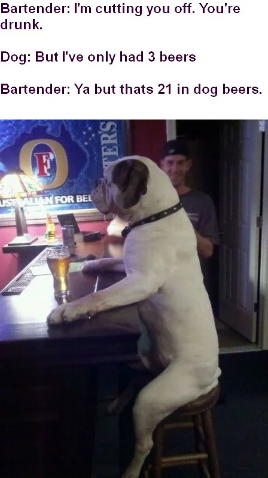

The Talking Dog
A man sees a sign in front of a house: "Talking Dog for Sale." He rings the bell, and the owner tells him the dog is in the backyard. The man walks into the backyard and asks the dog, "Can you talk?"
"Yep," the dog replies.
"So, what's your story?"
The dog looks up and says, "Well, I discovered my ability to talk when I was young. I told the CIA, and they had me travel around the world, telling secrets. I was a top agent for years! But eventually, I got tired of all the traveling, so I retired and just hang out now."
Amazed by the dog's story, the man asks the owner how much he wants for him.
The owner says, "Ten dollars."
The man replies, "Ten dollars? This dog is amazing! Why so cheap?"
The owner says, "Because he's a liar. He didn't do any of that stuff."
For the more jokes go to the home page.
To go to my home page Click here .
